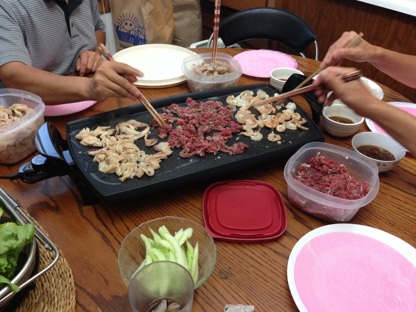
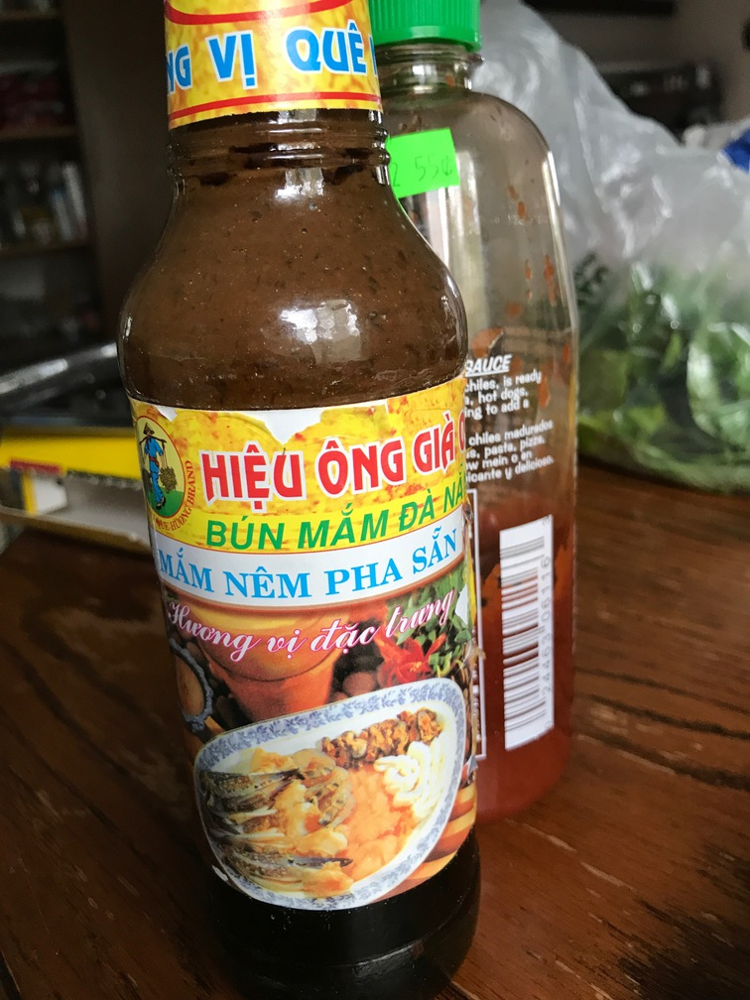

| Other | Meat | Veggie | Fruit |
|---|---|---|---|
| bun | beef | cucumber | pineapple |
| butter | shrimp | garlic | |
| mam nem | squid | lettuce | |
| rice paper | mint | ||
| sugar | shallot | ||
| thai basil |
| instructions |
|---|
| Loosely blend pineapple chunks |
| Stir fry shallots and garlic until golden |
| Stir in blended pineapple chunks |
| Stir in mam nem and sugar, adjust to sweet and salty taste |
| Thinly slice the meats, no need to marinate |
| Prepare the bun |
| Prepare the veggies |
| Cook the meats on stovetop with butter |
| Make rolls |